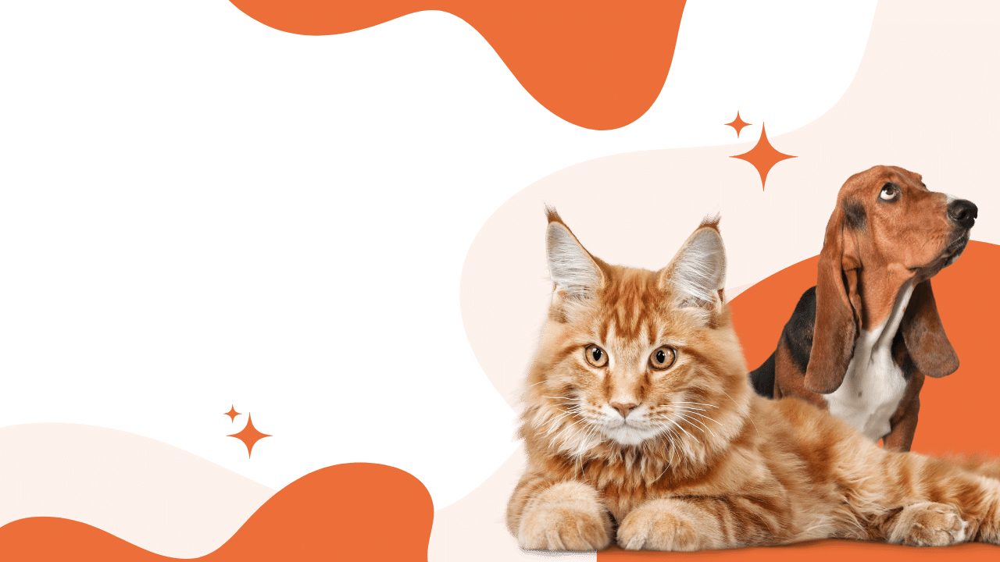

How to groom your pet at Home

Grooming is not just about maintaining your pet's appearance; it's an
essential aspect of their overall well-being. As responsible pet
owners, we understand that keeping our furry friends clean and
well-groomed goes beyond aesthetics—it's a key component of their
health and happiness. In this blog post, let's delve into the art and
importance of pet grooming.
The Art of Pet Grooming
Pet grooming is more than just a bath and a brush—it's an art form
that involves care, precision, and a deep understanding of your pet's
unique needs. Each pet, whether they have fur, feathers, or scales,
requires specific grooming techniques. The process encompasses:
1. Bathing:
Regular baths help keep your pet's coat clean and free from dirt,
allergens, and parasites. Choose a pet-friendly shampoo that suits
their skin type and condition.
2. Brushing:
Brushing is essential for removing loose fur, preventing matting, and
promoting healthy skin and coat. The frequency of brushing depends on
your pet's breed and coat type.
3. Nail Trimming:
Trimming your pet's nails is crucial to prevent discomfort, difficulty
walking, and potential injuries. If you're not comfortable doing this
yourself, a professional groomer can assist.
4. Ear Cleaning:
Regular cleaning of your pet's ears helps prevent infections. Be
gentle and use a pet-safe ear cleaning solution.
5. Teeth Care:
Dental health is often overlooked, but it's vital for your pet's
overall well-being. Regular teeth brushing and dental treats can help
prevent dental issues.